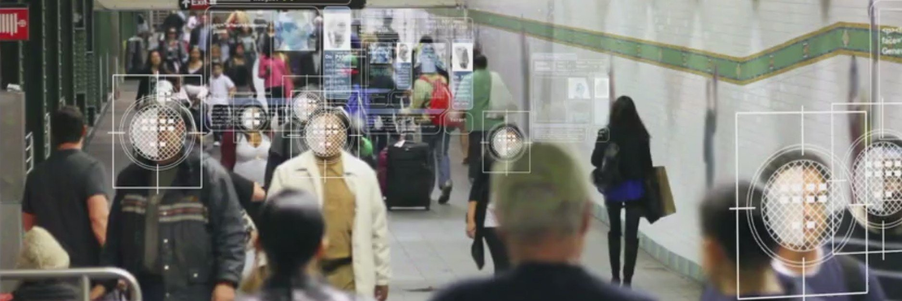

<<<<<<< HEAD
<div id="ai-page">
=======
<style>
</style>

<div id="ai-page">
>>>>>>> 5a02a88a903a252cd896c6ec4fef68b8ce89d3d4
    <h1 class="text-glow">Artificial Intelligence</h1>
    <h2>What is Artificial Intelligence (AI)?</h2>
    <p>
        The emergence of artificial intelligence (AI) has played a key part in ushering in the Fourth Industrial Revolution. According to the World Economic Forum, “it is disrupting almost every industry in every country.”
    </p>
    <p>
        Artificial intelligence is a conglomeration of concepts and technologies that means different things to different people – self-driving cars, robots that impersonate humans, machine learning, and more – and its applications are everywhere you look. The typical definition of AI looks something like this:
    </p>
    
    <h2>Why is Artificial Intelligence Important?</h2>
    <p>
        Artificial intelligence systems are critical for companies that wish to extract value from data by automating and optimizing processes or producing actionable insights. Artificial intelligence systems powered by machine learning enable companies to leverage large amounts of available data to uncover insights and patterns that would be impossible for any one person to identify, enabling them to deliver more targeted, personalized communications, predict critical care events, identify likely fraudulent transactions, and more.
    </p>
    <span>Companies that fail to adopt AI and machine learning technologies are fated to be left behind:</span>
    <ul>
        <li>Global spending on AI will grow 50% compounded annually and will reach $57.6 billion by 2021.</li>
        <li>Industries like retail, marketing, healthcare, fintech, insurance, and more will all stand to benefit from AI and machine learning.</li>
        <li>Companies driven by insights from data will take $1.2 trillion a year from non-insight driven companies by 2020.</li>
        <li>83% of early adopters are already gaining value from AI and machine learning initiatives.</li>
        <li>The net gain in jobs resulting from AI adoption will be over 5 million.</li>
    </ul>
<<<<<<< HEAD
    <p>
        The development of artificial intelligence (AI) has become a priority at the level of both states and corporations. In the Russian Federation, the program normative documents on AI are:
        <ul>
            <li>
                the national strategy for the development of artificial intelligence for the period up to 2030;
            </li>
            <li>
                roadmap for the development of end-to-end digital technology " Neurotechnologies and Artificial Intelligence (AI)»;
            </li>
            <li>
                Decree of the Government of the Russian Federation No. 2129-r of August 19, 2020 "On Approval of the Concept for the Development of Regulation of relations in the field of Artificial Intelligence and Robotics Technologies for the period up to 2024".
            </li>
        </ul>
        <br />
        Currently, face recognition in images is a very important function, which is perfectly handled by neural networks. Facial recognition using neural networks is beginning to be used in many areas of our lives. Here are the latest news related to this feature •
        <ul>
            <li>
                in Russian fitness clubs, a face recognition system has appeared;
            </li>
            <li>
                Rostelecom launches face recognition system at ATMs;
            </li>
            <li>
                the face recognition system is installed in the Moscow metro;
            </li>
            <li>
                police in Russia are starting to use face recognition cameras.
            </li>
        </ul>
    </p>
=======
>>>>>>> 5a02a88a903a252cd896c6ec4fef68b8ce89d3d4
</div>